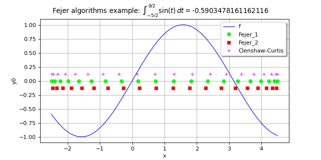

FejerAlgorithm¶
(Source code, png)

- class FejerAlgorithm(*args)¶
Fejer Integration algorithm
- Available constructors:
FejerAlgorithm(dimension=1, method=FejerAlgorithm.FEJERTYPE1)
FejerAlgorithm(discretization, method=FejerAlgorithmFEJERTYPE1)
- Parameters:
- dimensionint,

The dimension of the functions to integrate. The default discretization is FejerAlgorithm-DefaultMarginalIntegrationPointsNumber in each dimension, see
ResourceMap.- discretizationsequence of int
The number of nodes in each dimension. The sequence must be non-empty and must contain only positive values.
- methodint, optional
Integer used to select the method of integration. (Amongst ot.FejerAlgorithm.FEJERTYPE1, ot.FejerAlgorithm.FEJERTYPE2 and ot.FejerAlgorithm.CLENSHAWCURTIS).
Default is ot.FejerAlgorithm.FEJERTYPE1
- dimensionint,
Notes
The FejerAlgorithm algorithm enables to approximate the definite integral:

with
 ,
,  using a the approximation:
using a the approximation:![\int_{\vect{a}}^\vect{b} f(\vect{t})\di{\vect{t}} = \sum_{\vect{n}\in \cN}\left(\prod_{i=1}^d w^{N_i}_{n_i}\right)f(\xi^{N_1}_{n_1},\dots,\xi^{N_d}_{n_d})]()
where
 is the
is the  -th node of the
-th node of the  points and
points and  are the associated weight.
are the associated weight.For any
 , let
, let  .
The Clenshaw-Curtis nodes are:
.
The Clenshaw-Curtis nodes are:
for any
and its associated weights are:![w_k = \dfrac{c_k}{n}\left(1-\sum_{j=1}^{\lfloor n/2\rfloor}\dfrac{b_j}{4j^2-1}\cos\left(2j\theta_k\right)\right)]()
where:
![b_j =
\begin{cases}
2 & \textrm{ if } j < n/2, \\
1 & \textrm{ otherwise},
\end{cases}]()
and:
![c_k =
\begin{cases}
1 & \textrm{ if } k = 0 \textrm{ or } n - 1, \\
2 & \textrm{ otherwise}.
\end{cases}]()
The type-1 Fejer quadrature rule uses the nodes:

for any
and the associated weights are:![w_k = \dfrac{2}{n}\left(1-2\sum_{j=1}^{\lfloor n/2\rfloor}\dfrac{1}{4j^2-1}\cos\left(j\theta_{2k+1}\right)\right)]()
Finally, the type-2 Fejer quadrature rule is very close to the Clenshaw-Curtis rule. The two methods share the same nodes (except the endpoints that are set to 0 within the Fejer method). The weights of the type-2 Fejer quadrature rule are:
![w_k=\dfrac{4}{n+1}\sin\theta_k\sum_{j=1}^{\lfloor n/2\rfloor}\dfrac{\sin\left((2j-1)\theta_k\right)}{2j-1}]()
for any
.Examples
Create a FejerAlgorithm algorithm:
>>> import openturns as ot >>> algo = ot.FejerAlgorithm(2) >>> algo = ot.FejerAlgorithm([2, 4, 5])
Methods
Accessor to the object's name.
Accessor to the discretization of the tensorized rule.
getId()Accessor to the object's id.
getName()Accessor to the object's name.
getNodes()Accessor to the integration nodes.
Accessor to the object's shadowed id.
Accessor to the object's visibility state.
Accessor to the integration weights.
hasName()Test if the object is named.
Test if the object has a distinguishable name.
integrate(*args)Evaluation of the integral of
 on an interval.
on an interval.setName(name)Accessor to the object's name.
setShadowedId(id)Accessor to the object's shadowed id.
setVisibility(visible)Accessor to the object's visibility state.
integrateWithNodes
- __init__(*args)¶
- getClassName()¶
Accessor to the object’s name.
- Returns:
- class_namestr
The object class name (object.__class__.__name__).
- getDiscretization()¶
Accessor to the discretization of the tensorized rule.
- Returns:
- discretization
Indices The number of integration point in each dimension.
- discretization
- getId()¶
Accessor to the object’s id.
- Returns:
- idint
Internal unique identifier.
- getName()¶
Accessor to the object’s name.
- Returns:
- namestr
The name of the object.
- getNodes()¶
Accessor to the integration nodes.
- Returns:
- nodes
Sample The tensorized FejerAlgorithm integration nodes on
![[0,1]^d]() where
where  is the dimension of the integration algorithm.
is the dimension of the integration algorithm.
- nodes
- getShadowedId()¶
Accessor to the object’s shadowed id.
- Returns:
- idint
Internal unique identifier.
- getVisibility()¶
Accessor to the object’s visibility state.
- Returns:
- visiblebool
Visibility flag.
- getWeights()¶
Accessor to the integration weights.
- Returns:
- weights
Point The tensorized FejerAlgorithm integration weights on
where is the dimension of the integration algorithm.
- weights
- hasName()¶
Test if the object is named.
- Returns:
- hasNamebool
True if the name is not empty.
- hasVisibleName()¶
Test if the object has a distinguishable name.
- Returns:
- hasVisibleNamebool
True if the name is not empty and not the default one.
- integrate(*args)¶
Evaluation of the integral of
on an interval.- Available usages:
integrate(f, interval)
integrate(f, interval, xi)
- Parameters:
- Returns:
- value
Point Approximation of the integral.
- value
Examples
>>> import openturns as ot >>> f = ot.SymbolicFunction(['x'], ['sin(x)']) >>> a = -2.5 >>> b = 4.5 >>> algoF1 = ot.FejerAlgorithm([10]) >>> value = algoF1.integrate(f, ot.Interval(a, b))[0] >>> print(value) -0.590...
- setName(name)¶
Accessor to the object’s name.
- Parameters:
- namestr
The name of the object.
- setShadowedId(id)¶
Accessor to the object’s shadowed id.
- Parameters:
- idint
Internal unique identifier.
- setVisibility(visible)¶
Accessor to the object’s visibility state.
- Parameters:
- visiblebool
Visibility flag.

{kind=link}